FUEL INJECTOR > REMOVAL |
| 1. DISCHARGE FUEL SYSTEM PRESSURE |
Discharge the fuel system pressure (Click here).
| 2. DISCONNECT CABLE FROM NEGATIVE BATTERY TERMINAL |
| 3. REMOVE FRONT FENDER SPLASH SHIELD SUB-ASSEMBLY LH |
 |
Remove the 3 bolts and screw.
Turn the clip indicated by the arrow in the illustration to remove the fender splash shield.
| 4. REMOVE FRONT FENDER SPLASH SHIELD SUB-ASSEMBLY RH |
| 5. REMOVE NO. 1 ENGINE UNDER COVER SUB-ASSEMBLY |
 |
Remove the 10 bolts and No. 1 engine under cover.
| 6. DRAIN ENGINE COOLANT |

Loosen the radiator drain cock plug.
Remove the radiator cap. Then drain the coolant.
Loosen the 2 cylinder block drain cock plugs. Then drain the coolant from the engine.
Tighten the 2 cylinder block drain cock plugs.
Tighten the radiator drain cock plug by hand.
| 7. REMOVE V-BANK COVER SUB-ASSEMBLY |
 |
Remove the 2 nuts and V-bank cover.
| 8. REMOVE AIR CLEANER HOSE ASSEMBLY |
 |
Disconnect the vacuum transmitting hose and No. 2 ventilation hose.
Loosen the 2 hose clamps.
Remove the air cleaner hose.
| 9. REMOVE NO. 2 V-BANK COVER BRACKET |
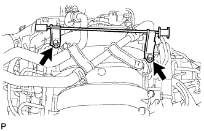 |
Remove the 2 bolts and bracket.
| 10. REMOVE NO. 2 WATER BY-PASS PIPE SUB-ASSEMBLY |
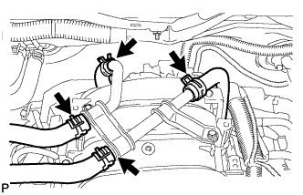 |
Disconnect the 4 water hoses from the No. 2 water by-pass pipe.
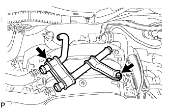 |
Remove the 2 bolts.
Remove the No. 2 water by-pass pipe.
| 11. DISCONNECT FUEL HOSE |
 |
Remove the fuel hose clamp.
Pinch and pull the fuel hose connector to disconnect the connector from the fuel pipe.
| 12. REMOVE NO. 2 FUEL HOSE |
for engine side:
 |
Detach the fuel hose clamp.
Detach the lock claw by lifting up the cover, as shown in the illustration.
Pinch and pull the No. 2 fuel hose connector to disconnect the connector from the No. 3 fuel pipe.
for body side:
 |
Pinch and pull the No. 2 fuel hose connector to disconnect the connector from the fuel pipe.
| 13. REMOVE NO. 2 VENTILATION HOSE |
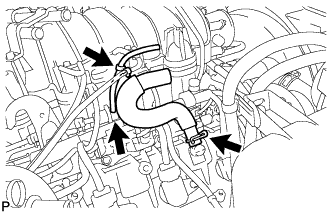 |
w/ Secondary Air Injection System:
Remove the No. 2 ventilation hose from the cylinder head cover.
Remove the clamp.
Remove the vacuum transmitting hose from the fuel pressure regulator.
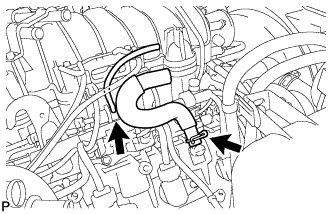 |
w/o Secondary Air Injection System:
Remove the No. 2 ventilation hose from the cylinder head cover.
Remove the vacuum transmitting hose from the fuel pressure regulator.
| 14. REMOVE NO. 1 VENTILATION HOSE |
 |
Remove the No. 1 ventilation hose from the intake manifold and ventilation valve.
| 15. DISCONNECT PURGE VSV |
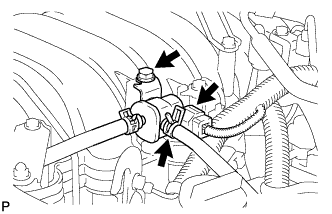 |
Disconnect the purge VSV connector.
Disconnect the purge line hose from the purge VSV.
Remove the bolt and disconnect the purge VSV from the intake manifold.
| 16. DISCONNECT ENGINE WIRE |
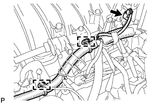 |
Disconnect the VSV connector (for ACIS).
Disconnect the 2 wire clamps from the wire bracket and engine hanger.
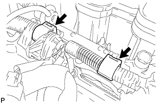 |
Disconnect the 2 wire clamps from the wire clamp bracket on the RH delivery pipe.
Disconnect the 8 injector connectors.
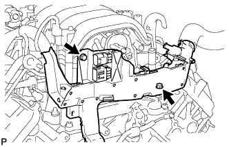 |
Remove the 2 bolts and disconnect the engine wire protector.
| 17. REMOVE VACUUM CONTROL VALVE SET (w/ Secondary Air Injection System) |
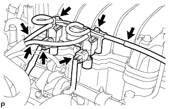 |
Disconnect the 2 VSV connectors.
Disconnect the 3 vacuum hoses.
Remove the 2 bolts and vacuum control valve set.
| 18. REMOVE NO. 1 FUEL PIPE SUB-ASSEMBLY |
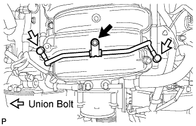 |
Remove the bolt, 2 union bolts, 4 gaskets and No. 1 fuel pipe.
| 19. DISCONNECT NO. 3 FUEL PIPE SUB-ASSEMBLY |
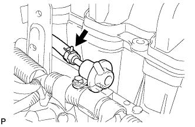 |
Disconnect the fuel return hose from the pressure regulator.
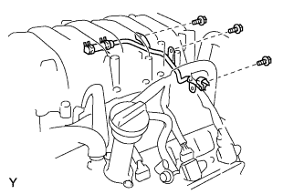 |
Remove the 3 bolts and disconnect the No. 3 fuel pipe from the intake manifold and fuel delivery pipe LH.
| 20. REMOVE FUEL DELIVERY PIPE SUB-ASSEMBLY |
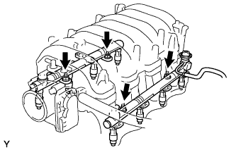 |
Remove the 4 nuts holding the delivery pipes to the intake manifold.
Remove the 2 delivery pipes from the intake manifold.
| 21. REMOVE FUEL INJECTOR ASSEMBLY |
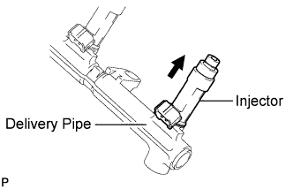 |
Remove the 8 injectors from the delivery pipe LH and RH.
Remove the O-ring, grommet and insulator from each injector.